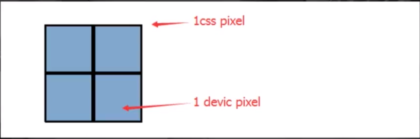
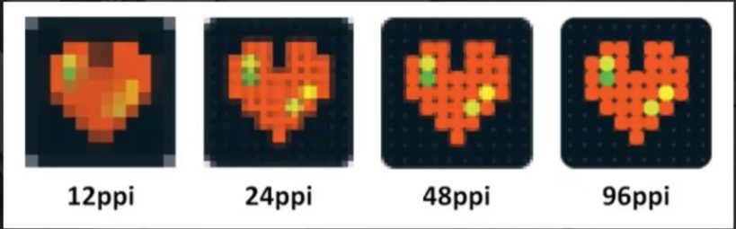
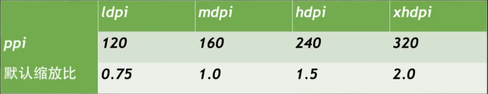
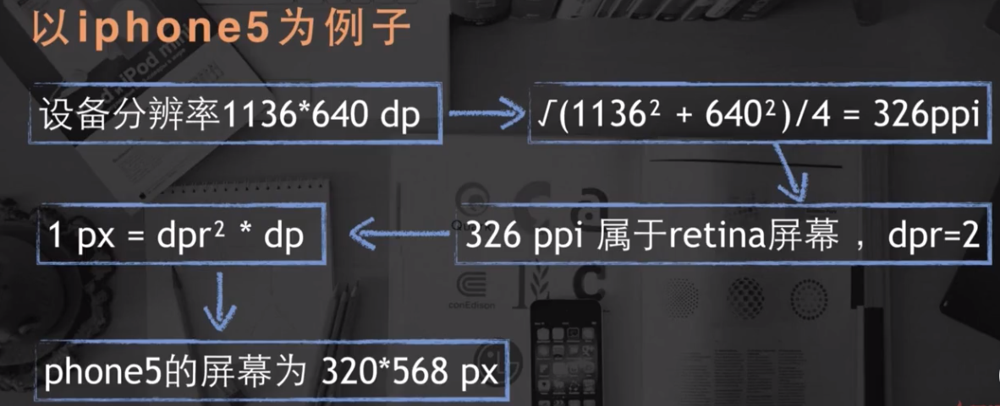

移动端web开发知识点
综述
- 跑在手机端的web页面（H5页面）
- 跨平台
- 基于webview
- 告别ie拥抱webkit
- 更高的适配和性能要求
一、移动web基础知识
1.1 pixel像素基础
- px: css pixels 逻辑像素， 浏览器使用的抽象单位
- dp,dt: device independent pixels 设备无关像素
- dpr: devicePixelRatio 设备像素缩放比
计算公式： 1px = (dpr)^2 * 1dp
当dpr等于2的情况

平面上： 1px = (2)^2 1dp
维度上： 1px = 2 1dp
- DPI：打印机每英寸可以喷的墨汁点(印刷行业)
- PPI: 屏幕每英寸的像素数量，即单位英寸内的像素密度
在计算机显示设备参数描述上，二者意思相同
计算公式：以ipone5为例(1136*640, 4英寸)
ppi = √(1136^2 + 640^2) / 4 = 326ppi(视网膜Retina屏) 单位为硬件像素，非px

ppi越高，像素数越高，图像越清晰

retina高清屏的dpr都是大于等于2
eg: iphone5的ppi为326大于320，所以iphone5的dpr等于2

1.2 viewport
layout viewport = document.documentElement.clientWidth(移动设备默认viewport)
visual viewport = window.innerWidth(浏览器可视区域大小)
ideal viewport = device-width1
<meta name="viewport" content="width=device-width,initial-scale=1,user-scalable=no">
最佳实践：layout viewport = visual viewport = device-width
- width: 设置布局viewport的特定值(‘device-width’)
- initial-scale: 设置页面的初始缩放
- minimum-scale: 最少缩放
- maximum-scale: 最大缩放
- user-scalable: 用户能否缩放
设计方案
- 根据设备的实际宽度来设计（常用）
- initial-scale设为0.5，此时物理像素dp等于抽象像素px，1像素边框和高清图片都不需要额外处理
二、常见移动web适配方法
- 定高，宽度百分比
- flex布局
- Media Query(媒体查询)
2.1 Media Query
1 | @media 媒体类型 and (媒体特性) { |
- 媒体类型：screen(屏幕), print(打印机), handheld(手持设备), all(通用)
- 媒体特性：max-width, min-width, max-height, min-height, device-width, device-height, orientation:landscape(横向) portrait(纵向)
2.2 rem
font size of the root element
1rem = html的font-size
首先以设计稿的屏幕大小设置html的font-size，然后网页各处（元素尺寸、文字大小）根据此font-size来设置大小，使用rem作为单位，
随后搭配媒体查询或JS，根据屏幕的大小来动态控制html元素的font-size，当html的font-size改变，其他元素的大小也会跟着改变1
2
3
4
5
6
7
8
9
10@media screen and (max-width: 360px) and (min-width: 321px) {
html {
font-size: 20px;
}
}
@media screen and (max-width: 320px) {
html {
font-size: 24px;
}
}
1 | var htmlWidth = document.documentElement.clientWidth || document.body.clientWidth |
三、响应式布局和弹性布局
响应式布局：一个页面在不同屏幕不同终端上都能显示出令人满意的效果，页面的布局大小和内容在不同屏幕下都有不同样式
弹性布局：类似于自适应布局，在不同屏幕宽度下，页面内容大小随之等比例缩放，页面布局内容不发生改变
3.1 响应式布局设计点
meta设置
1
2
3
4
5<meta name="viewport" content="width=device-width,initial-scale=1,maximum-scale=1,user-scalable=no">
<meta name="applicable-device" content="pc,mobile">
<meta http-equiv="Cache-Control" content="no-transform ">
<meta http-equiv="X-UA-Compatible" content="IE=edge,chrome=1">
<meta name="HandheldFriendly" content="true">使用百分比布局(当没有命中媒体查询时，页面也能正常展示)
弹性图片
1
2
3
4#wrapper img {
max-width: 100%;
height: auto;
}图片会根据wrapper的大小来改变宽度，height为auto保证图片不会失真
如果为背景图片，可设置图片的background-size属性1
2
3
4
5.background-img {
background-img:url(img.png);
background-repeat:no-repeat;
background-size:100% 100%;
}background-size是css3的新属性，用于设置背景图片的大小，有两个可选值，第一个值用于指定背景图的width,第2个值用于指定背景图的height,如果只指定一个值，那么另一个值默认为auto。
background-size:cover; 等比扩展图片来填满元素
background-size:contain; 等比缩小图片来适应元素的尺寸- 重新布局，显示与隐藏
- 同比例缩减元素尺寸（百分比，rem，em)
- 调整页面结构布局（经常切换位置的元素使用 **绝对定位**，减少重绘提高渲染性能
- 隐藏冗余的元素
静态布局、自适应布局、流式布局、响应式布局、弹性布局等的概念和区别
四、移动web特别样式处理
4.1 高清图片
在移动web页面渲染图片，为了避免图片产生模糊，图片的宽高应该用物理像素单位渲染，即100*100的图片1
2width: (100/dpr) px;
height: (100/dpr) px;
4.2 1像素边框
在retina屏下会模糊，因为设置的1px使用了2dp渲染
解决方法：scale(.5)等
4.3 多行文本溢出
1 | /* 单行文本溢出 */ |
五、移动端交互
5.1 300ms延迟
为了确定用户是”单击”还是”双击”，设置300ms延迟来判断
解决方法：自定义tap事件：在touchstart、touchend时记录时间、手指位置，在touchend时进行比较，如果
手指位置为同一位置（或允许移动一个非常小的位移值）且时间间隔较短（一般认为是200ms)，且过程中未曾触发过touchmove，即可认为触发了手持设备的’click’。（会有点透的bug)
使用zepto.js库或者使用fastClick库
5.2 touch事件
- touchstart: 手指触摸屏幕触发（已经有手指放屏幕上不会触发）
- touchmove：手指在屏幕滑动，连续触发
- touchend：手指离开屏幕时触发
- touchcancel：系统取消touch时候触发
触摸事件包含专有的触摸属性
- touches: 当前屏幕所有触摸点的列表
- targetTouches: 当前对象所有触摸点的列表
- changedTouches: 引发当前事件所有触摸点的列表
用一个手指接触屏幕，触发事件，此时这三个属性有相同的值。
用第二个手指接触屏幕，此时，touches有两个元素，每个手指触摸点为一个值。当两个手指触摸相同元素时，
targetTouches和touches的值相同，否则targetTouches 只有一个值。changedTouches此时只有一个值，
为第二个手指的触摸点，因为第二个手指是引发事件的原因用两个手指同时接触屏幕，此时changedTouches有两个值，每一个手指的触摸点都有一个值
手指滑动时，三个值都会发生变化
一个手指离开屏幕，touches和targetTouches中对应的元素会同时移除，而changedTouches仍然会存在元素。
手指都离开屏幕之后，touches和targetTouches中将不会再有值，changedTouches还会有一个值，
此值为最后一个离开屏幕的手指的接触点。
每个touch对象包含属性:
- clientX: 触摸目标在视口的x坐标
- clientY: 触摸目标在视口的y坐标
- identifier: 表示触摸的唯一id
- pageX: 触摸目标在页面中的x坐标（包含滚动）
- pageY: 触摸目标在页面中的y坐标（包含滚动）
- screenX: 触摸目标在屏幕中的x坐标
- screenY: 触摸目标在屏幕中的y坐标
- target: 触摸的dom节点目标
5.3 弹性滚动
局部滚动开启弹性滚动1
2
3
4body {
overflow: scroll;
-webkit-overflow-scrolling: touch;
}
android不支持原生弹性滚动，可使用iscroll或Better-scroll库